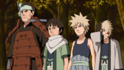
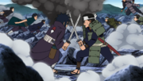
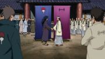
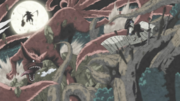
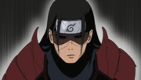
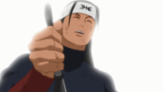

Hashirama was born during the Warring States Period, the eldest of Butsuma Senju's four sons. Hashirama and his brothers grew up on the battlefield waging constant war with the Senju's rivals: the Uchiha. During his infrequent downtime, Hashirama met a boy his own age named Madara. The two quickly developed a friendly rivalry, be it skipping stones or urinating in rivers, with Hashirama typically winning their contests.Hashirama did not approve of this practice of sending children to fight and die, believing it would only increase the bitterness between the Senju and Uchiha, thus causing more deaths.
 After the deaths of their brothers, Kawarama and later Itama, Hashirama and his remaining brother, Tobirama, decided a new shinobi system would need to be implemented to end the cycle of child deaths, a system that would require an alliance between the Senju and Uchiha. Like Hashirama, Madara was also a shinobi who had lost brothers on the battlefield. Together they imagined a world where children like themselves wouldn't need to fight and where their brothers would be safe from harm.As a precaution, Hashirama and Madara did not divulge their family names, but nevertheless discovered each other's identities: Hashirama was a Senju, Madara was an Uchiha; it was their duty to kill each other. Hashirama set this duty aside, unwilling to take his friend's life. Madara, however, decided their dreams of a peaceful world were impossible, and therefore ended their friendship so that they could kill each other without reservation.
 Over the following years Hashirama and Madara continued to meet in combat. Hashirama could never bring himself to kill someone he still considered a friend, and Madara could never defeat Hashirama's superior abilities. In time, both Madara and Hashirama became leaders of their respective clans. Under Hashirama's leadership and extraordinary ninja prowess, the Senju began to best the Uchiha Clan until at one point Hashirama had both Madara and Izuna at his mercy. However, unable to find the resolve to kill his childhood friend, Hashirama tried to convince Madara to unite their two clans to make their childhood dreams a reality. A mortally wounded Izuna convinced Madara otherwise and they retreated, prompting Hashirama to send a cease-fire request. Although some Uchiha found the offer increasingly tempting, Madara was unwilling to accept after Tobirama killed his last remaining brother, Izuna. This did not stop some Uchiha from defecting to the Senju out of self-preservation.Wracked with grief, Madara made one final stand against Hashirama and the Senju and was summarily defeated. Tobirama attempted to kill Madara to finally end the fighting, but Hashirama stopped him, knowing that would only renew hostilities between the Senju and Uchiha. At Madara's suggestion, Hashirama offered to kill himself in order to achieve a peaceful resolution. As he was about to end his own life, Madara stopped him, moved by the gesture, and assented to peace.
The Senju, the Uchiha, and all their affiliated clans came together to found a village of peace, where children would never need to die in battle. Hashirama and Madara, rekindling their childhood friendship, called that village Konohagakure. The other countries would soon follow Konohagakure's example and build their own hidden villages. Although Hashirama created much of the village's infrastructure with his Wood Release abilities, it was his wish that Madara become Hokage, the village's leader and protector.At Tobirama's insistence, the Hokage position was opened up to a vote by Konoha's villagers, and it was Hashirama that they elected into office.Hashirama wanted Madara to become his adviser so that he could improve his standing among the villagers and someday succeed him as Second Hokage. Madara felt that position would inevitably go to Tobirama, which would in turn end badly for the Uchiha. With his position in Konoha rapidly diminishing, Madara decided the village was a failed experiment and abandoned it, intent on someday returning to face Hashirama in battle yet again.
True to his promise, Madara eventually attacked Konohagakure on multiple occasions. After countless fights and with the Nine-Tails under his control, Madara challenged Hashirama to one final contest.The Nine-Tails' power, as well as Hashirama's efforts to capture and contain it, devastated the landscape, carving out what would later be called the Valley of the End. Hashirama spent the duration of their battle trying to reason with Madara, but Madara continued fighting until he was too tired to keep even his Sharingan active. This enabled Hashirama to distract him with a wood clone while the real Hashirama stabbed him in the back. Madara collapsed and, before dying, noted how much Hashirama had changed from when they were children.
Hashirama was an excitable man with a boisterous personality. He loved meeting new people, having friendly competitions, and gambling. Headstrong and often impulsive, it fell to others – such as his brother, Tobirama – to be more responsible or realistic about things that Hashirama had gotten carried away with.When taken down in this way, or even when simply presented with information that troubled him, Hashirama could do a near-immediate about-face, going from laughing to sulking. These moping periods were typically brief though, and he'd quickly go back to his usual high-spirited nature.Later generations upon meeting him, tended to remark that neither extremes of his personality were very fitting for a man called the "God of Shinobi".
Despite the first impression he may give, Hashirama was capable of being serious when it came to matters that were important to him. He spent years opposing the practice of sending children to war and dreamed of a shinobi system where a child could be around others his or her age, never needing to "grow up" prematurely on the battlefield.To that end he became very devoted to Konoha upon its foundation, as it was the realisation of his dream for peaceful childhoods. He wanted the rest of the village to cherish what Konoha represented just as much as he did, encouraging them to regard every villager as part of one large family that should always look out for each other. As Hokage, his job was to protect that family at all costs, even if that cost was his life. This philosophy, known as the "Will of Fire", would become a cornerstone of Konoha teachings for decades after his death.
The Will of Fire is demonstrative of Hashirama's general optimism when it came to other people; he believed a village-first loyalty would naturally break down the mentality that shinobi had to look out for their clans.Hashirama lived by this philosophy long before Konoha's founding, having no qualms about killing himself if it meant peace between the Uchiha and Senju clans. In fact, his entire goal of gaining more power was to have enough just to stop violence. One example of this was he believed if the two most powerful clans during the Warring States Period were to join forces, there would be no other shinobi clan to stand against them and would stop selling their services, effectively ending the Warring States Period. He always saw the best in others, either trusting that they acted in good faith or that they could, through non-violent means, be reasoned with. He was humble, not above lowering his head to his fellow village heads or claiming inferiority to those he'd never met but whose actions he approved of.If nothing else, Hashirama was kind, placing the needs of others before his own: he was even willing to take his own life if it would help create a world where his friends and family wouldn't need to die unnecessarily.It was on these points that Tobirama disagreed with Hashirama most ardently, as Tobirama felt that Hashirama should have a greater value of himself and a greater suspicion of others. It was, similarly, on these points that Hashirama was at his most forceful, asserting his views over Tobirama's; though Tobirama did not often agree, he knew better than to oppose his brother.Hashirama is also well-balanced on this regard as he didn't exert his force over Tobirama over past actions that cannot be changed such as when finding out Tobirama seemingly mistreated the Uchiha, he expressed anger, but didn't exert his force as it didn't do any good.